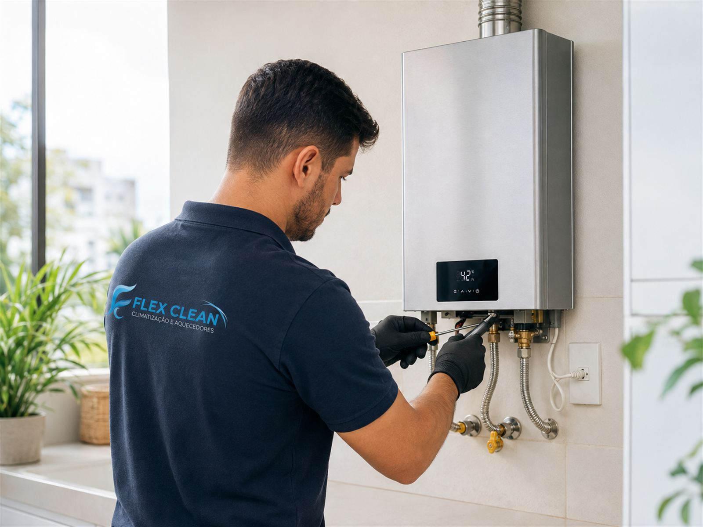
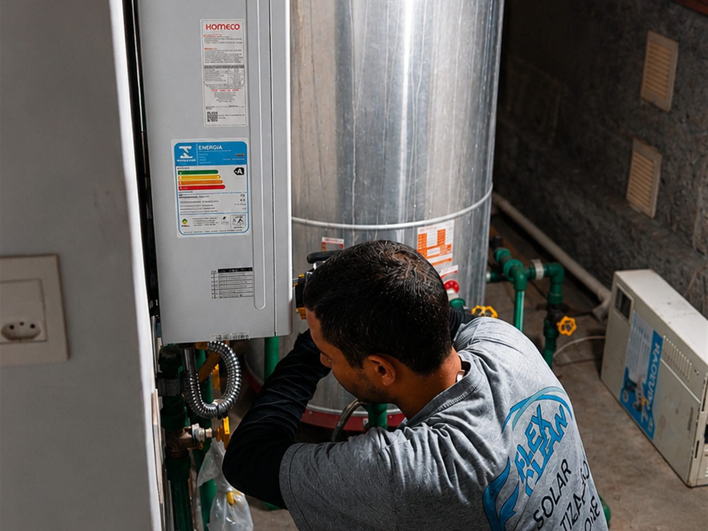
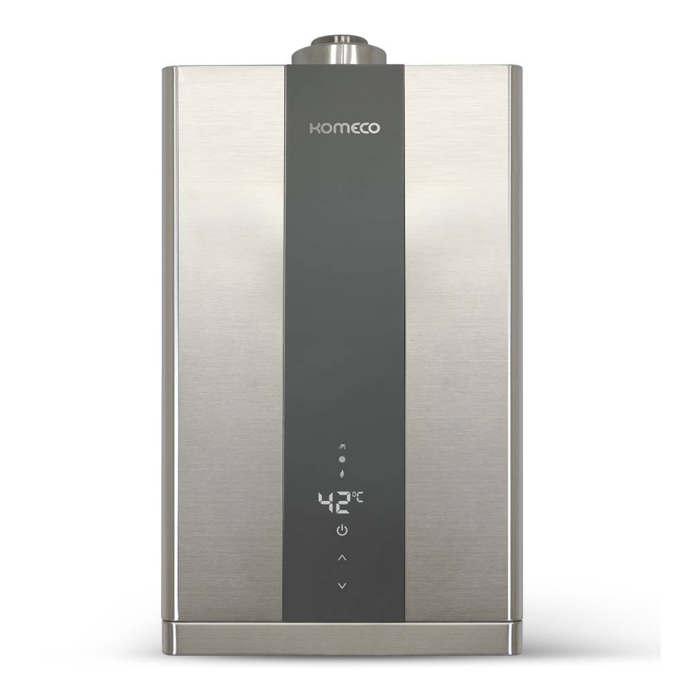
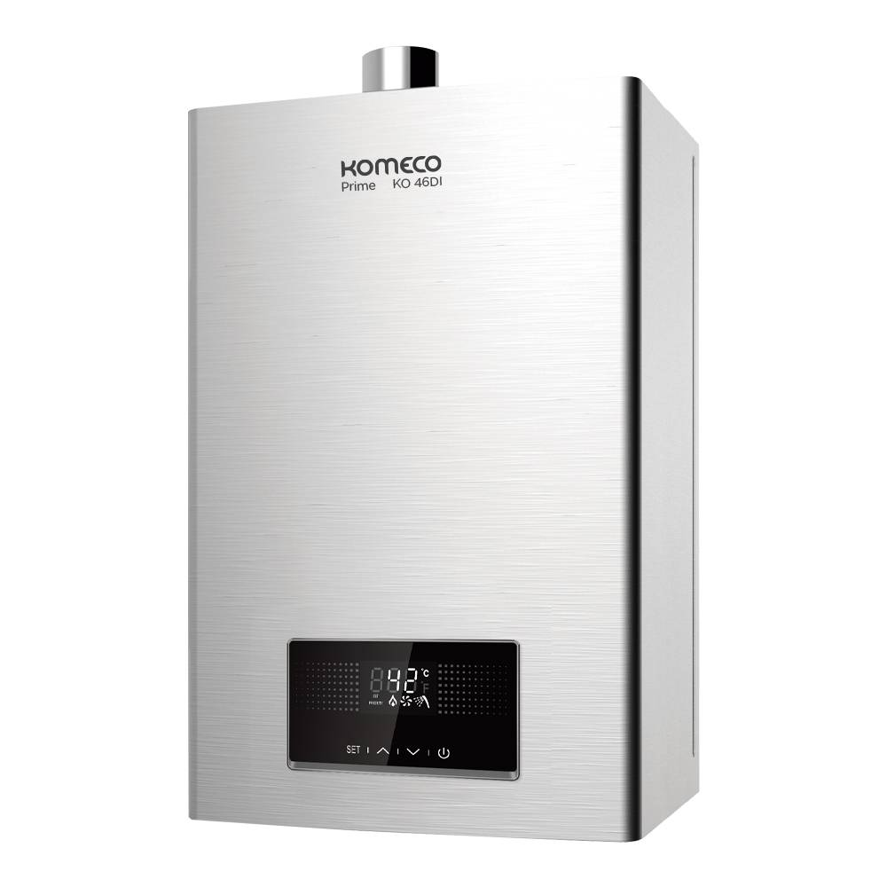
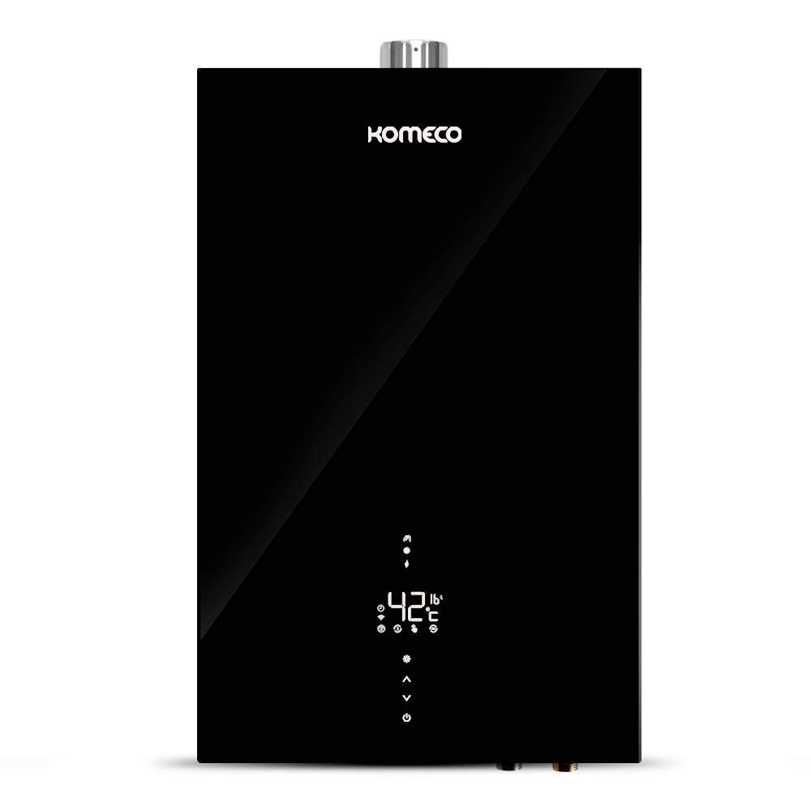
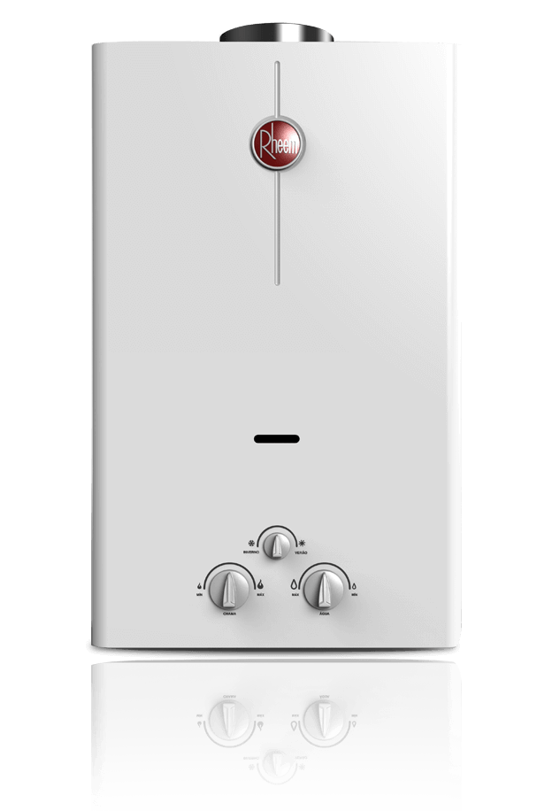

Resolva hoje com atendimento especializado em Florianópolis: manutenção, revisão preventiva e conserto de aquecedores a gás, com suporte rápido e garantia real.

Ninguém merece banho frio ou risco com vazamento de gás. Quando o aquecedor falha, tudo vira urgência. E contratar quem não tem preparo, garantia nem suporte gera risco sério quando o assunto é gás.
O aquecedor não liga ou a água não esquenta.
Banho interrompido, água oscilando entre quente e fria.
O painel acusa erro, ou o aparelho começa a fazer barulho fora do normal.
Sinal sério: pare o uso e chame um técnico.
Vazamento no equipamento ou nas conexões.
Demora para aquecer ou consome gás demais.
Notou algum destes sinais?
Chame no WhatsApp que a gente orienta o próximo passo com segurança.
Resolver Problema AgoraMais do que um simples conserto: segurança e tranquilidade para sua família. Diagnóstico e serviço no local ou em laboratório especializado, com garantia.
Análise técnica, identificação de falhas, testes de funcionamento, substituição de componentes e regulagens.
Solicitar pelo WhatsAppLimpeza interna e de queimadores, testes de vazamento, revisão de componentes, análise da exaustão, verificação da pressão do gás e testes hidráulicos. Recomendada anualmente pelos fabricantes.
Solicitar pelo WhatsAppRemoção de sujeira, fuligem e resíduos que prejudicam o funcionamento. Melhora desempenho, aquecimento, segurança e durabilidade.
Diagnóstico completo para identificar a verdadeira causa do problema e corrigir da forma correta.
Problemas em aquecedores podem gerar risco de vazamento, falhas na exaustão, monóxido de carbono, superaquecimento e danos ao equipamento. Por isso a manutenção preventiva é fundamental para a segurança da residência.
Na Flex Clean o trabalho segue procedimento definido: testes de estanqueidade, avaliação de exaustão, verificação de flexíveis, análise técnica completa e revisão geral do sistema.

Uma empresa construída na confiança. Desde 2015 a Flex Clean atende Florianópolis, e ao longo dos anos se tornou referência por atendimento profissional, suporte técnico, transparência e qualidade. Aqui você não depende de um técnico informal: conta com empresa estruturada, peças e componentes adequados e acompanhamento do serviço do início ao fim. Grande parte dos novos clientes chega por indicação de outros clientes satisfeitos.
Rinnai, Komeco, Rheem, Bosch, Lorenzetti, Orbis, Inova, Heliotek e diversos outros modelos do mercado.




Sujeira acumulada, desgaste natural, falhas de ignição e obstruções evoluem para uma manutenção corretiva mais cara quando não são tratados. A revisão preventiva anual, recomendada pelos fabricantes, aumenta a vida útil, reduz falhas, evita vazamentos e mantém a segurança.
Verifique se ele realmente oferece garantia e suporte. Quando o assunto é gás, improviso gera riscos, prejuízos e retrabalho. Na Flex Clean você encontra atendimento profissional, empresa estruturada, suporte pós-venda, técnicos preparados e garantia real.
Sim. Trabalhamos com praticamente todas as principais marcas do mercado.
Depende da demanda do dia e da região atendida.
Sim. Os serviços realizados possuem garantia.
Sim. Todos os fabricantes recomendam revisão anual.
Pode estar relacionado a vazamentos, regulagem incorreta ou problemas nos componentes. Pare o uso e chame um técnico.
Sim, atendemos toda a ilha.
Manutenção, revisão preventiva, limpeza técnica e diagnóstico especializado, com suporte, garantia e acompanhamento do início ao fim.